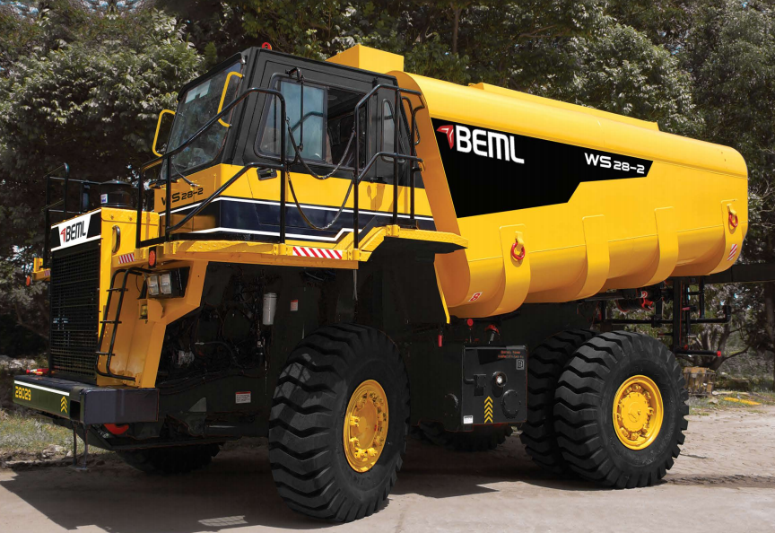

WS28-2 - Water Sprinkler
The WS28-2 features a rugged Allison 4500 ORS electronic shift transmission with automatic lock-up clutch and a heavy-duty planetary axle for strong speed and tractive effort. Its 280 kW (375 HP) engine and 28,000-litre tank capacity support high productivity with faster cycle times. A human-engineered cabin with ergonomically designed controls ensures superior comfort and operational ease. Safety and reliability are enhanced through Orbitrol power steering, dual braking systems, ROPS cabin, and low-maintenance brake designs.
Engine Swept Volume
25 Litres
Rated Speed
2600 rpm
Max Torque
4780 Nm


| Feature | Details |
|---|---|
| Engine Type | 12 Cylinder, 4-Stroke, V-90 |
| Engine Configuration | Turbocharged, Intercooled, Direct Injection, Liquid Cooled Diesel Engine. |
| Engine Swept Volume | 25 litre |
| Bore X Stroke | 138mm x 140mm |
| Rated Speed | 2600 rpm |
| Rated Power | 1103 kW @ 2600 rpm as per ISO 1585 |
| Maximum Torque | 4780 Nm @ 1560 rpm |
| Specific Fuel Consumption | 210 g/kWh |
| Operating Environmental Conditions | -40°C to +55°C |
| Generator | 2x20 kW (40kW), 28 VDC |